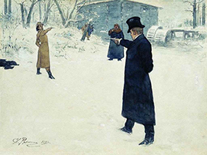
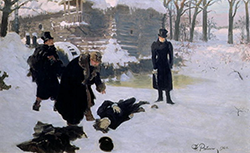
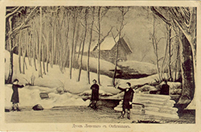

14 января – Евгений Онегин убил на дуэли Владимира Ленского
Александр Пушкин «Евгений Онегин» "... в нашем романе время расчислено по календарю" – писал А. С. Пушкин.
Онегин родился в 1795, стрелялся с Ленским в 26 лет. Именины Татьяны Лариной – 12 января (по ст.ст.), дуэль была через день, 14 января 1821.
«Онегин выстрелил... Пробили
Часы урочные: поэт
Роняет молча пистолет»

